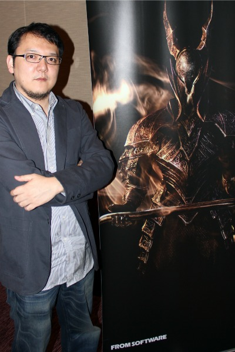
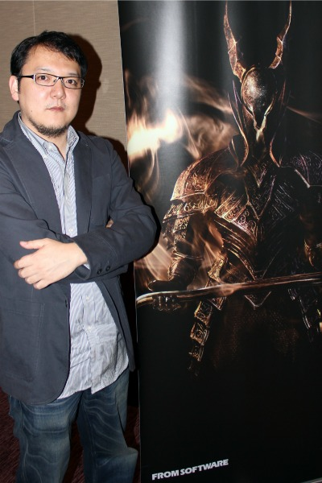

Somos una compañia Japonesa desarrolladora de videojuegos. Nuestros inicios parten desde el primero de Noviembre de 1986, llevando 35 años de experiencia en el ámbito del desarrollo de videojuegos. Sacando títulos conocidos para el ámbito gamer, desde el Demon Souls (2009), Dark Souls I, II & III, Bloodborne y Sekiro. Finalmente, nos encontramos este 2022 estrenando nuestro tan esperado juego, Elden Ring. El cual desarrollamos desde hace mas de 6 años.
 
